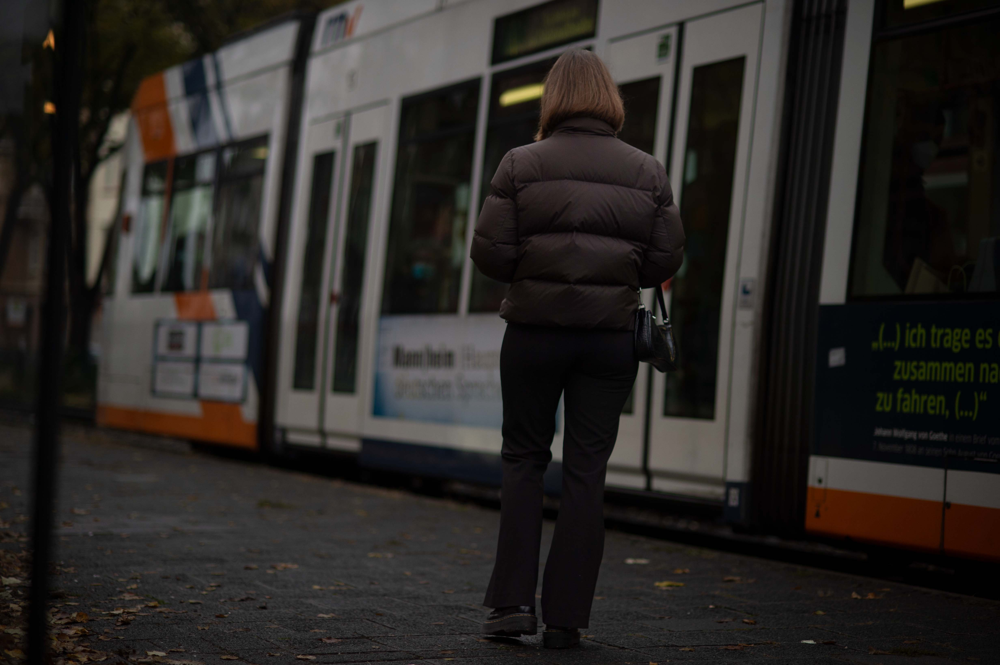
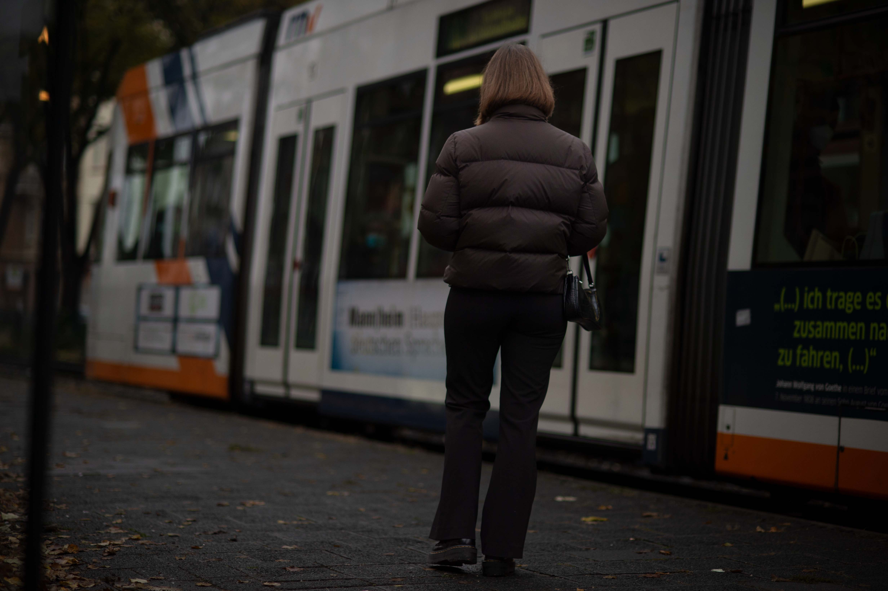
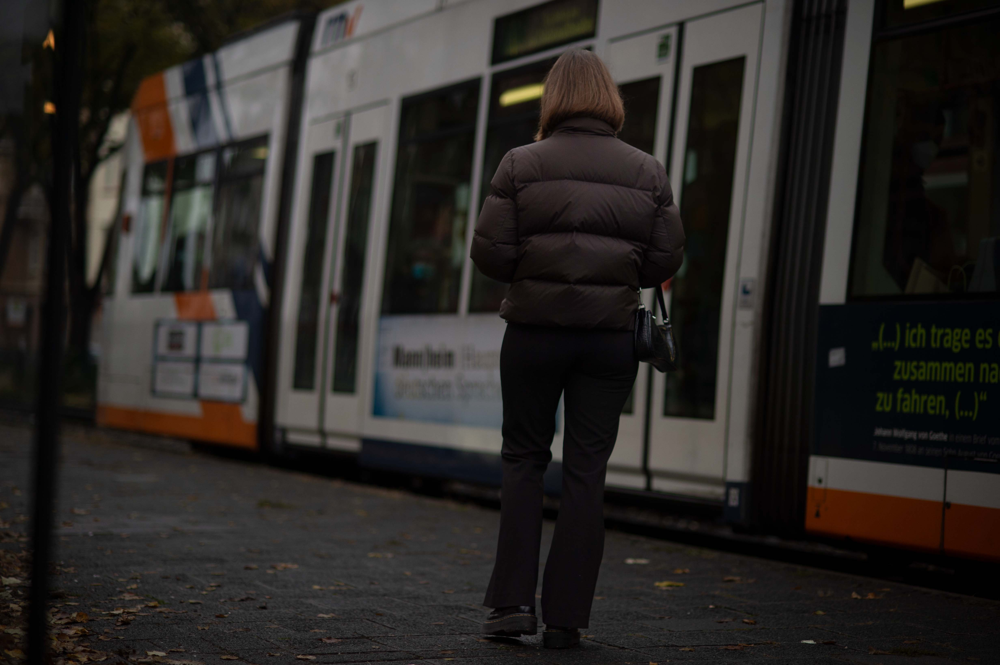

picture story

she waited. she hoped. and then she decided to let go. i photographed this series for my photo design class.
at night
i photographed this series for my photo design class.
plaster
i photographed this series in a photo studio for the class studio technology. i wanted to show vulnerability and how plaster can be aesthetic as well. pain is a part of life. covering pain and wounds is part of the process until it will become a scare. some plasters will last a lifetime and others will be removed. removing a plaster can be a bold and painful process, but it means fresh air as well. a plaster is a great metaphor for pain and wounds we are hiding.